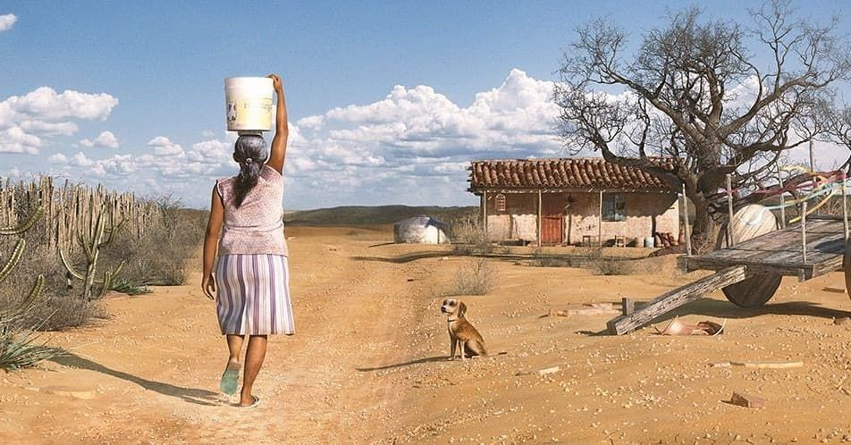
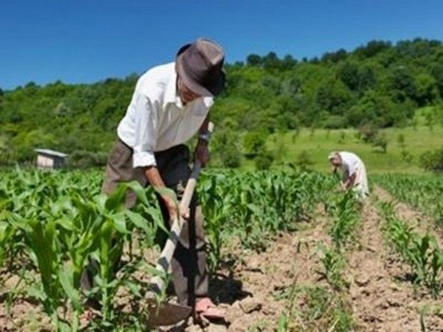

A vida no sertão
O Nordeste brasileiro é uma região tropical semi-árida com verões secos e quentes; no período invernoso, quando não caem chuvas torrenciais, é atingido por secas rigorosas durante anos sucessivos.
Possui uma população marcada pelo sincretismo cultural originado da fusão das culturas dos vários grupos que a constituíram: nativos indígenas, colonizadores portugueses e africanos trazidos como escravos. Sua população é, sobretudo, rural, pobre, muitas vezes analfabeta e marcada pela mobilidade — no passado, em função dos ciclos de produção do pau-brasil, açúcar, ouro, café; no presente, pela falta de uma política agrária que fixe o homem à terra.
Essa situação tem-se agravado com as secas cíclicas e as condições climáticas adversas, que provocam constantes migrações e geram uma mistura de traços culturais onde coabitam os temas indígenas, os hábitos regionais e as novidades veiculadas por intermédio da televisão.
A sociedade sertaneja é uma sociedade dispersa em função de várias razões: o forte calor, a variedade das origens étnicas e a influência dos diversos grupos de clientelismo. Dividida pela geografia, isola-se em pequenos grupos. As famílias vivem em comunidades de vizinhanças e compadrios e, muitas vezes, praticam uma agricultura de subsistência.
A dificuldade da vida dos sertanejos pode ser muito bem exemplificada por obras nacionais famosas como “Auto da Compadecida” de Ariano Suassuna e “Vidas Secas” de Graciliano Ramos. Ambas as obras dos renomados escritores deixam claro a dificuldade pelas quais são submetidos os sertanejos, além de mostrar que a situação de decadência vivida, de certo modo, implica para atitudes prejudiciais como assaltos, disputas e desrespeitos evidenciados muitas vezes como banditismo ou cangaço.
Para minimizar a dureza de suas existências, a vida social é redimensionada e dinamizada quando da ocasião das festas religiosas ou das peregrinações periódicas que o povo sertanejo realiza aos santuários consagrados a seus santos protetores. A fazenda constitui um microuniverso onde coabitam o patrão, em sua casa grande, os empregados, em habitações rudimentares, e os animais. Este conjunto forma uma pequena sociedade onde as relações são marcadas por uma forte hierarquia
Entre todas as dificuldades vividas nas regiões do sertão nordestino, pode se dizer que, de certo modo, houveram muitos avanços e investimentos para a melhora da condição da vida social local. Se comparar a atual situação da população nordestina e relaciona-la com os tempos da antiguidade, vê-se nitidamente que houve uma intervenção buscando a melhora da vida cotidiana de homens mulheres e crianças locais, mesmo que a maior parte da população ainda sofra uma grande influência das cicatrizes históricas a região tende à melhora gradativamente.
Aluno(a): Kaua Martins